무선 침묵 이야기 (5) - 카리브해까지 뻗은 천라지망
게시: 2024-08-22T06:30:48+09:00
<천라지망의 장기말들> WW2 당시의 U-boat들의 작전은 대서양의 외로운 늑대처럼 알아서 적함을 찾고 알아서 판단하는 뭐 그런 느낌이 들지만 실제로는 본국 사령부의 매우 엄격한 통제하에 있었음. 원래 군에서 제일 지겹고 힘든 것이 바로 상부에 대한 보고인데, U-boat들도 여기서 벗어날 수 없었음. 이들은 매일 현재 위치와 연료, 식량, 어뢰의 잔량 등과 함께 전날의 전과 등을 본국에 보고해야 했고, 또 본국 사령부로부터 어디로 언제까지 이동하여 무엇을 공격하라는 시어머니 같은 micro-management에 시달려야 했음.
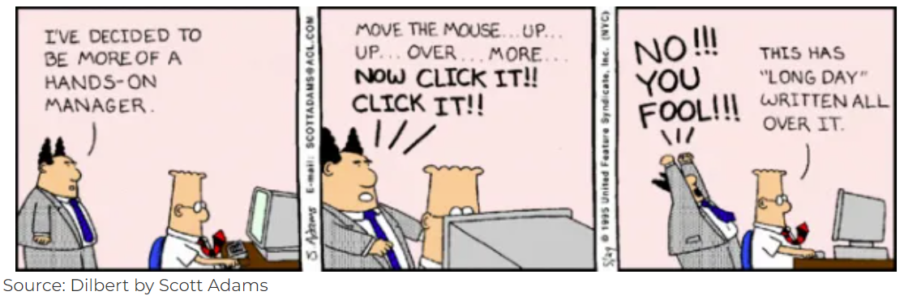
(마이크로 매니지먼트가 어떤 지옥을 만들어내는 지는 당해본 사람만 알 수 있음) Micro-management는 그 누구도 좋아하지 않는 것이지만 독일 잠수함 사령부가 그렇게 시어머니 노릇을 한 것도 이유는 있었음. 잠수함 특성상 관측 높이도 낮은데다 느리기까지 한 U-boat가 자체적으로 목표물을 찾고 추격하는 것은 사실상 불가능. 제대로 사냥을 하려면 연합군 수송선단의 현 위치와 방향을 미리 알고서 그것이 지나갈 위치에 매복을 하고 있어야 했음. 그러자면 Focke-Wulf Fw 200 Condor 해상초계기와 대서양의 U-boat들로부터 적 발견에 대한 보고를 상세히 받아 작전을 짠 뒤 그 작전 계획을 다시 U-boat들에게 제때 정확하게 전달해야 했음. 그렇게 장기 놀음을 하려면 장기판 위에 자신의 어떤 말이 어떤 위치에 있는지 정확하게 파악하고 있어야 했으므로 U-boat들로부터 현재 위치는 물론 연료 및 어뢰 잔량 등에 대한 자세한 보고를 받아야 했던 것.
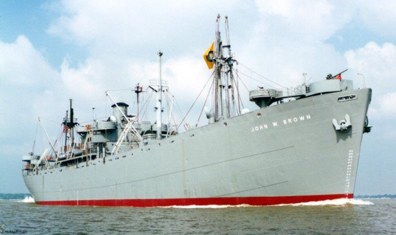
(WW2 당시 대서양 보급로의 짐마차 역할을 한 Liberty Ship 중 지금까지 살아남은 3척 중 한 척인 SS John W. Brown. 1만톤, 11노트. 이 사진은 2000년 오대호에서 찍은 것인데, 대서양과 오대호는 St. Lawrence Seaway라는 갑문이 설치된 운하를 통해서 연결이 되어 있기 때문에 대형 선박의 통행이 가능하다고.)
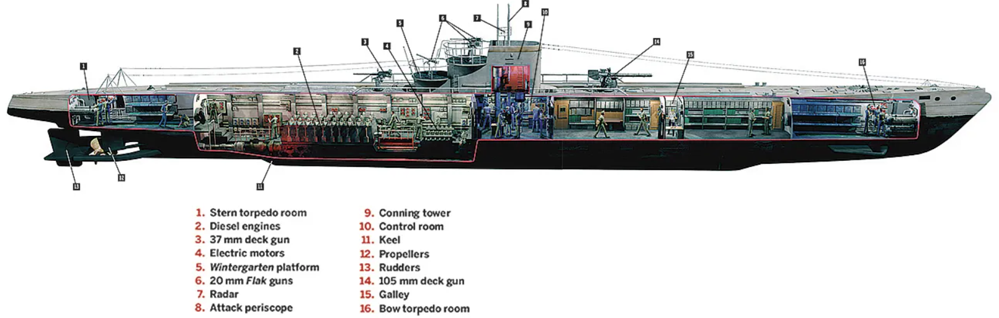
(Type IX U-boat. 약 1천톤 (부상시. 잠수하면 약 1천1백톤), 속도는 18.2노트 (부상시, 잠수했을 때는 7.7노트). 잠수 상태에서의 속도가 저렇게 느렸으므로 잠수한 상태로 연합군 수송선단을 뒤에서 접근하여 공격하는 것은 사실상 불가능. 미리 수송선단의 앞쪽에서 기다리고 있어야 했음.)
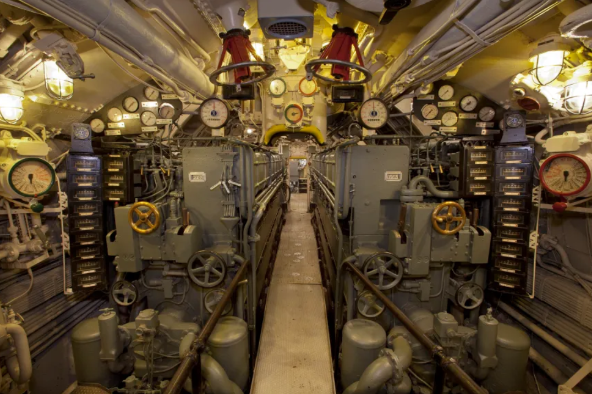
(사진은 장거리 순양용 Type IXC U-boat인 U-505의 기관실 모습. 디젤 엔진과 2대의 복동식(double-acting) Siemens-Schukert 전기 모터를 이용하여 해상에서는 18..2노트, 잠수해서는 7.7노트로 항행 가능. 해상에서의 항속거리는 10노트의 속력으로 19,400km, 잠수 상태의 항속거리는 4노트의 속력으로 144km.) <물 속에 들어간 U-boat는 어떻게 하나?> 그런데 물 속에 있는 U-boat와 어떻게 무선 통신을 할까? 이건 그렇게까지 큰 문제가 아니었음. 요즘의 잠수함들은 '가끔 부상하기도 하는 물 속의 군함'이지만 당시 잠수함은 '필요시 바다 속으로 잠수할 수 있는 군함'이었기 때문. 평상시 U-boat들은 대부분 해상에서 디젤 엔진으로 항행하며 배터리를 충전했고, 적함이나 적기를 발견하면 잠수. 어차피 바다는 넓으니 하늘에도 바다에도 연합군이 없는 공간과 시간은 얼마든지 있었고, 그때는 대부분 바다 위로 부상해 있었으니 본부와의 무선 통신은 큰 지장이 없었음. 그래서 U-boat와 유럽 대륙의 사령부는 지루한 일과를 수행하는 사무실의 월급쟁이들처럼 매일 무선통신을 주고 받음. 여기에는 종종 언제 어디로 어떤 규모의 연합군 수송선단이 지나갈 것이니 어디에 매복하라거나, 영국해군 항모가 지나가는 것을 보았다던가 하는 긴박한 내용도 있었으나 아무리 전시라고 해도 매일매일이 그렇게 긴박하지는 않았음. 사령부에서 방송되는 전문의 앞머리에는 그날의 일기 예보가 꼭 끼어 있어서 항상 wetter(영어로 weather 즉 날씨)가 정해진 위치에 들어있었고, 끝부분에는 '하일 히틀러'라는 인사말도 포함되어 있었음. 그렇게 암호문 속에 항상 포함된 알려진 단어들을 이용하여 암호 해독에 활용하는 기법을 known-plaintext attack (KPA)이라고 하는데, Bletchley Park에 있던 영국 정보부(Government Communications Headquarters, 약칭 GCHQ)가 독일군의 암호체계인 Enigma를 해독한 계기가 되었던 것도 바로 그런 KPA. 이 부분은 베네딕트 컴버배치 주연의 2014년 영화 The Imitation Game에도 중요한 장면으로 나옴.
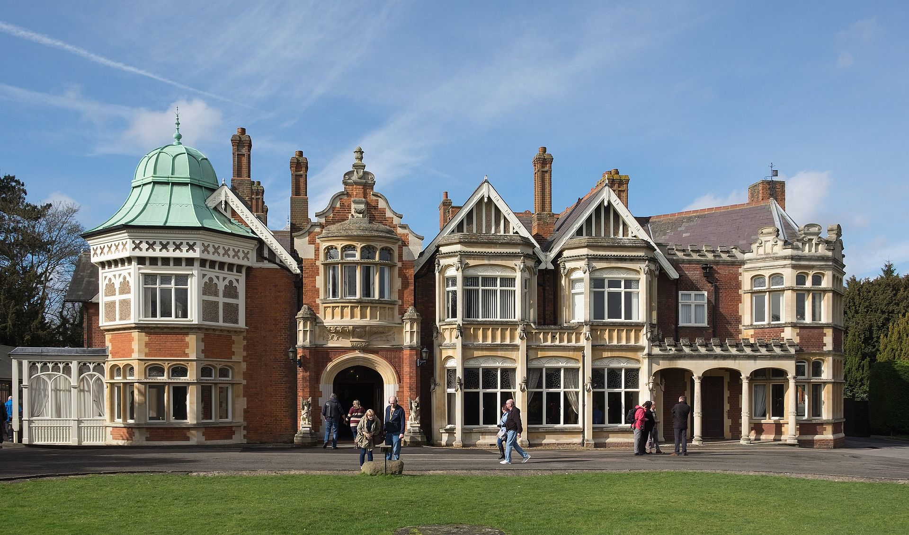
(2017년 촬영된 실제 블레츨리 파크의 건물 모습. 블레츨리 파크는 런던 북서쪽 약 75km 떨어진 버컹엄셔(Buckinghamshire)에 있음.) 그러나 여기서 다루고자 하는 부분은 그런 암호 해독이 아니라 무선통신으로 자체의 문제. 유럽 대륙의 독일해군 잠수함 사령부는 프랑스 및 노르웨이 등의 해안가에 HF (high frequency, 3~30 MHz 범위) 주파수를 이용한 무선통신 센터를 두고 대서양의 유보트와 통신. 그러나 하필 중요 메시지를 송신하는 순간 그 메시지를 받아야 할 U-boat가 미군 구축함을 피해 잠수 상태로 있을 수도 있었음. 그래서 확실한 송수신을 위해 같은 내용은 VLF (Very Low Frequency, 3~30 kHz 범위)로 한번 더 송신.
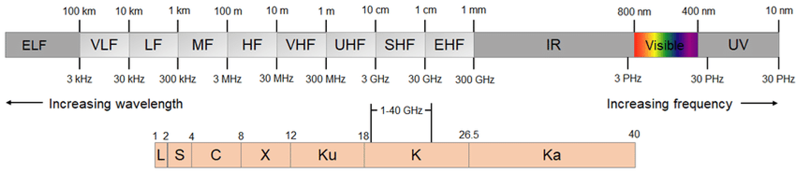
(전파의 주파수 범위에 따른 LF, HF, VHF, UHF 등의 범위 분류. 현대 우리나라의 5G 이동통신은 26, 28, 38, 60 GHz의 주파수를 사용.) VLF가 그렇게 물 속에 잠긴 잠수함에게도 확실하게 메시지를 전송할 수 있다면, 왜 굳이 HF로 한 번 보내고 다시 중복된 메시지를 VLF로 한 번 더 보낼까? 그건 VLF에게 (당연히) 단점이 있기 때문. 일단, 주파수가 낮다보니 데이터의 전송 속도가 고주파에 비해 크게 떨어짐. 그리고 저주파의 특성상 인공적인 전자기 신호 및 자연계에 존재하는 온갖 전자기 신호에 의해 간섭을 받아 신호 선명성이 크게 떨어짐. 그러니 확실한 전달을 위해서는 선명한 HF로 한 번, 그리고 VLF로도 한 번 더 보냈던 것. VLF에는 선명하지 않다는 단점만 있었던 것이 아님. 그 송신 시설이 무지막지하게 규모가 크다는 단점이 있었음. 원래 모든 안테나는 파장 길이만큼의 길이를 가지는 것이 가장 좋고, 그게 안 되면 1/2, 그것도 안 되면 1/4 길이를 가지는 것이 좋았음. 그래야 그 전파의 공명 주파수(resonant frequency)가 그 안테나에서 가장 효율적으로 움직일 수 있기 때문. 그러나, VLF인 25 kHz만 해도 파장 길이는 약 12 km. 12미터가 아니라 진짜 12킬로미터. 그러니 1/4이나 1/8 길이의 안테나를 만드는 것은 인간적으로 불가능.
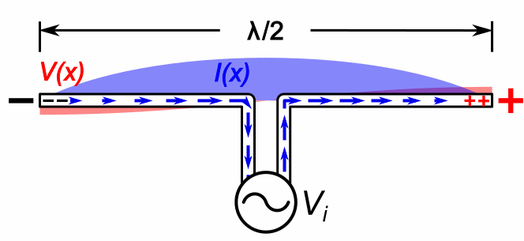
(왜 안테나 길이가 그 안테나가 송수신하려는 전파의 파장 길이의 1배 혹은 1/2배, 혹은 1/4인 것이 좋은지 보여주는 그림. 저 사인 곡선이 파장 1/2 길이인데, 안테나가 파장의 1/3이나 2/5라면 전파의 진동이 자연스러울 수가 없음.) 그런데 독일 잠수함 사령부는 대체 어떻게 그런 엄청난 길이의 안테나를 만들었을까? 바로 capacitance loading (정전(靜電) 용량 로딩)이라는 기법. 커패시턴스란 쉽게 말해 콘덴서(condensor, capacitor)가 보관할 수 있는 전하량을 뜻하는데, 안테나도 도체이므로 당연히 커패시턴스가 존재. 그런데 촘촘히 감은 코일을 연결하는 등의 기법을 통해 이 capacitance를 회로상에서 늘려주면 안테나의 전기장(electric field)을 늘려주고, 따라서 그 안테나의 공명 주파수가 더 낮아지는 효과를 냄. 즉, 안테나의 길이가 실제보다 훨씬 길어지는 효과를 내는 것. 이 capacitance loading 효과를 내기 위해 독일군이 채택한 것은 umbrella antenna (우산형 안테나). 가운데에 수백 m 길이의 강철 파이프를 세우고 그걸 단극자 안테나 (monopole antenna)로 쓰되, 그 강철 파이프를 중심으로 우산살처럼 여러 개의 강철 와이어를 연결하여 구조적으로도 지탱하고, 그 와이어들을 콘덴서로 사용하여 capacitance loading 효과를 낸 것.
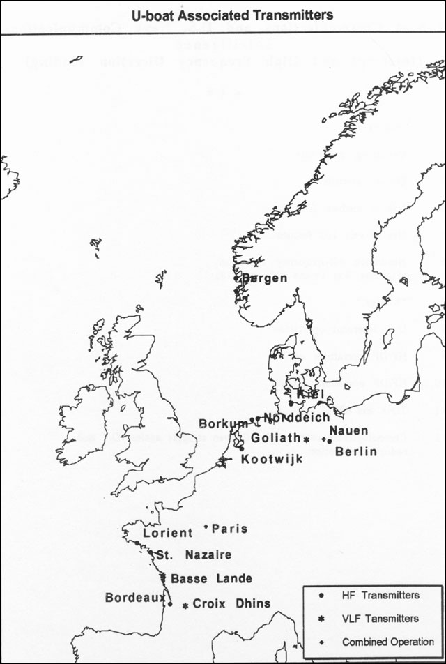
(독일해군의 잠수함과의 교신을 위한 무선통신 기지의 위치들. HF 송신기들은 주로 해변에, 그럴 필요가 없는 장거리 통신용 VLF는 내륙에 위치한 것이 보임. 아래 소개되는 골리아트(Goliath) 안테나의 위치도 표시되어 있음.)
독일해군의 VLF 송신 기지는 VLF 특성상 굳이 해변에 있을 필요가 없었고, 프랑스 및 독일 내륙 지방에 있었음. 잘 알려진 그런 VLF 송신 안테나 중 하나가 독일 내륙 지방인 작센-안할트(Sachsen-Anhalt) 주 칼버(Kalbe)에 있던 골리아트(Goliath) 안테나였는데, 그 구조는 중심축의 모노폴 안테나가 길이 210m의 강철 튜브로 된 우산형 안테나였음. 이 골리아트 안테나는 15 ~ 25 kHz의 전파를 최대 1 메가와트의 전력으로 송출했는데, 그 신호는 대서양 건너 카리브 해에서 15m 깊이에 잠수 중인 U-boat에서도 잡혔다고 함.
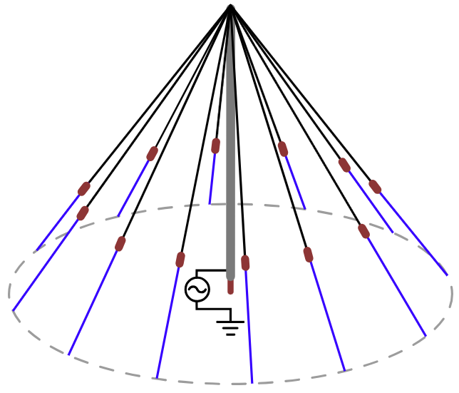
(우산형 안테나(umbrella antenna)의 구조. 중심의 모노폴 안테나를 지탱하는 우산살에 해당하는 강철 와이어 중간에 달린 빨간 점은 절연재.)
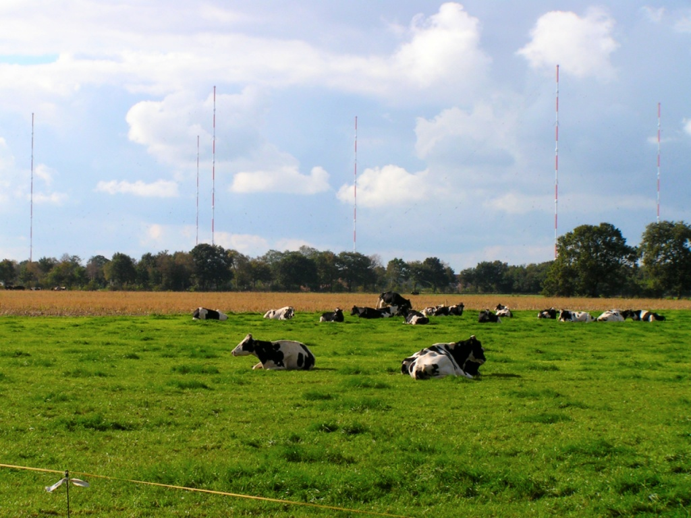
(이 사진은 1982년부터 지금까지 현역으로 사용 중인 독일 북서쪽 해안 지방인 라우더핀(Rhauderfehn)에 있는 DHO38 VLF 송수신 안테나. 독일해군 및 기타 NATO 동맹 해군의 잠수함들에게 중요 메시지를 전달할 때 사용. 저 8개의 안테나들의 구조는 역시 우산형 안테나(umbrella antenna)로서 각각의 안테나 기둥의 길이는 352.8m이고, 각각의 안테나 기둥은 절연재 역할을 겸하는 높이 3m짜리 세라믹 실린더 위에 놓여있음. 23.4 kHz의 전파를 최대 800 kWatt의 전력으로 방출하는데, 이 신호는 수심 30m 깊이로 잠항 중인 잠수함에서도 수신 가능.)
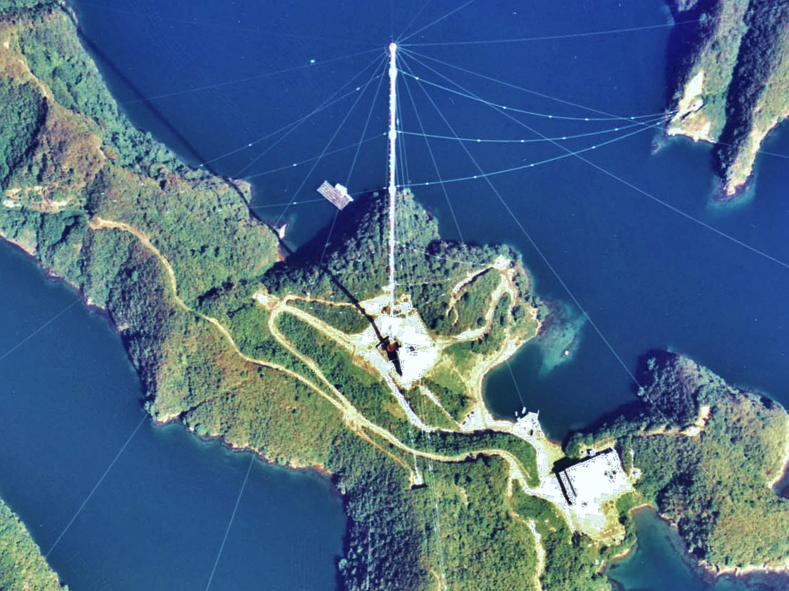
(이 사진은 잠수함과의 통신을 위한 VLF 안테나는 아니고, 선박과 항공기의 전파 항법을 위한 시스템인 Omega의 우산형 VLF 안테나. 10 ~ 14 kHz의 전파를 송출하는 이 안테나의 중심축 높이는 389m이고 1973년에 대마도에 세워짐. GPS 시대인 지금은 쓸모가 없어져 해체되었음.)
그런데 사령부에서 U-boat로의 송신은 이렇게 한다고 치고, U-boat에서 사령부로의 송신은 어떻게 했을까? 거기서 문제가 발생함.